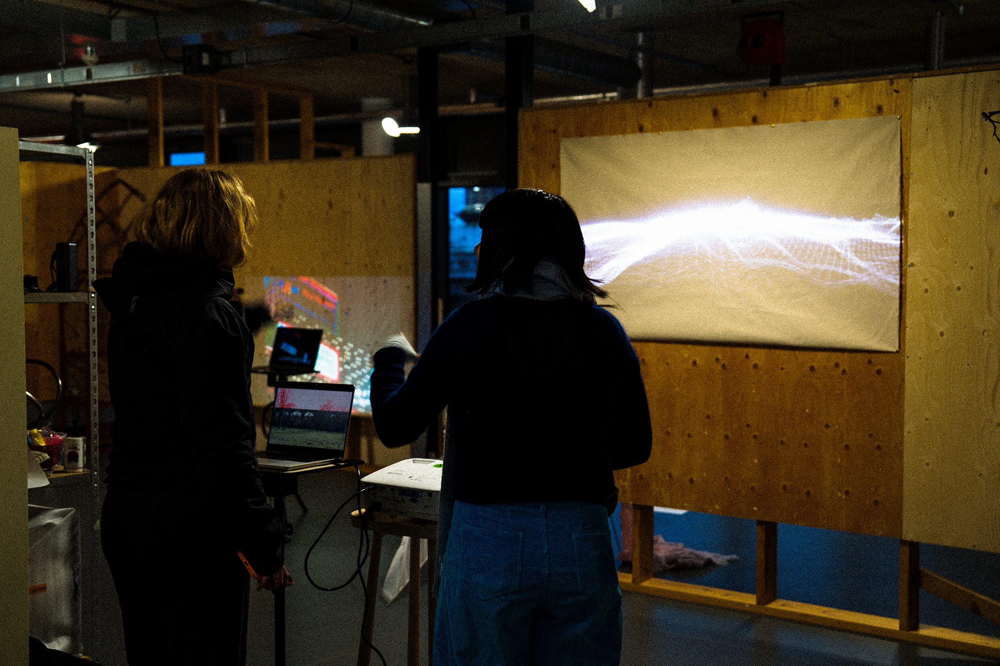
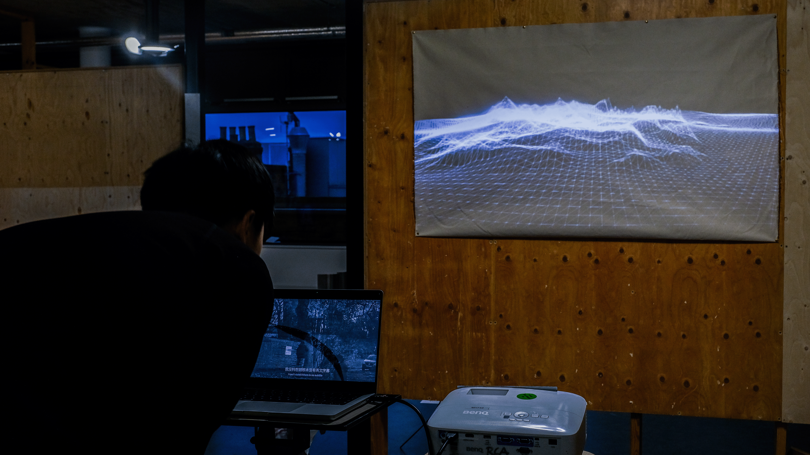
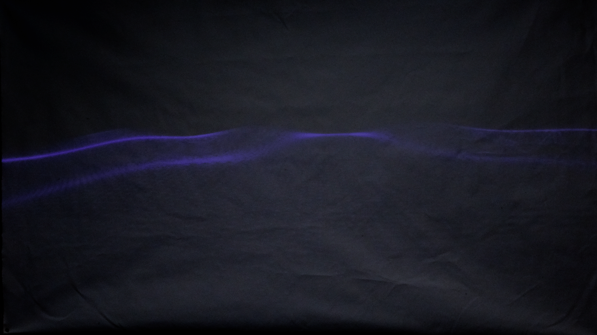

ABOUT
Interactive Art
Digital Media Ontology Series
Telecommunication
Producer: Yi Huang
Content: The worldview of socialist epistemology drives me to relentlessly pursue some tangible truth, yet as I immerse myself in the mysteries of the cosmos, I also feel a sense of meaninglessness and regret at being merely a transient visitor...

Format: Interactive animation
Tech: visual studio code
交互艺术
数字媒介本体系列
通信
制作人：黄熠
内容：社会主义可知论的世界观让我不断探求某种具象的真理，但当我沉浸在宇宙奥妙的同时，我也会因自己仅是个过客而感到无意义与遗憾……

形式：交互动画
技术：图形化编程




自检：这件作品有人把我弄无语了。
Self Reflection: No Words.
© 2026 All Rights Reserved.